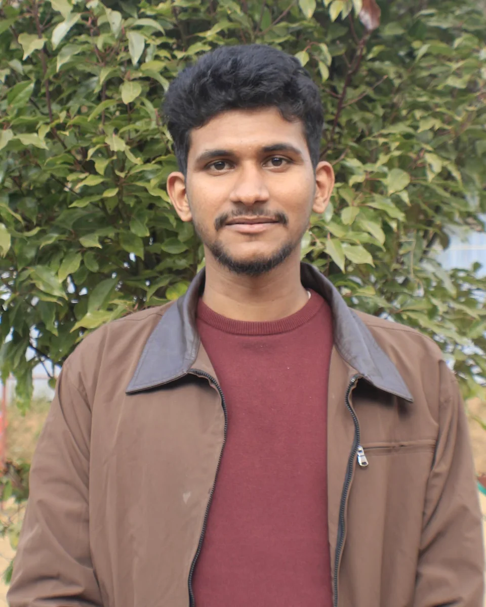
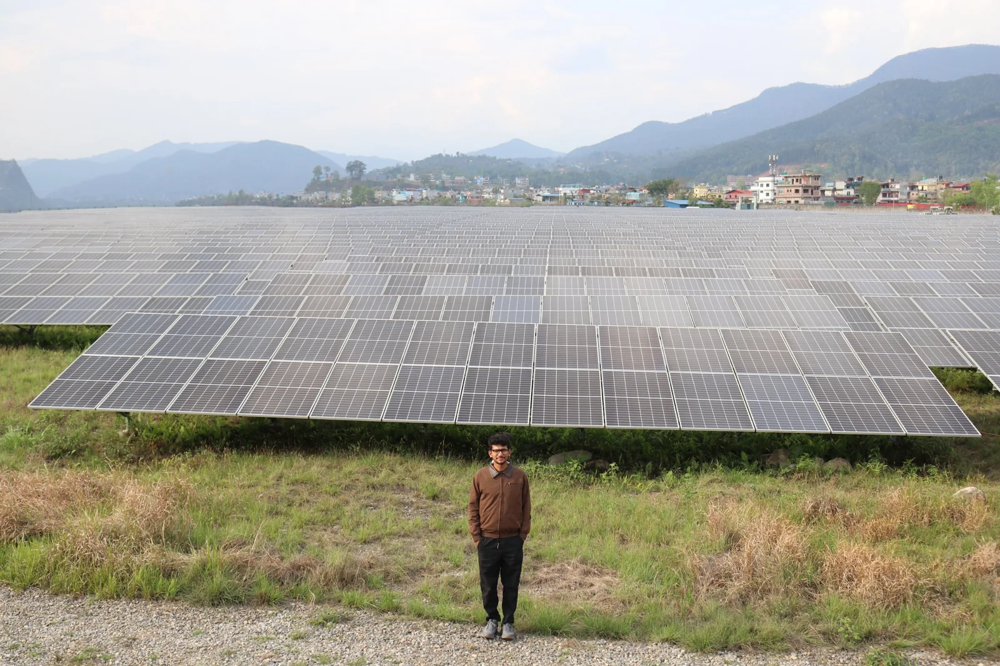
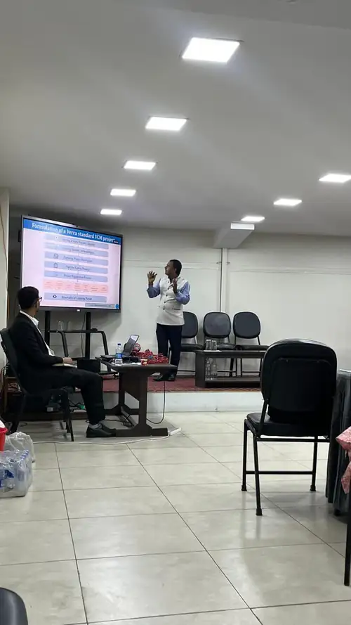
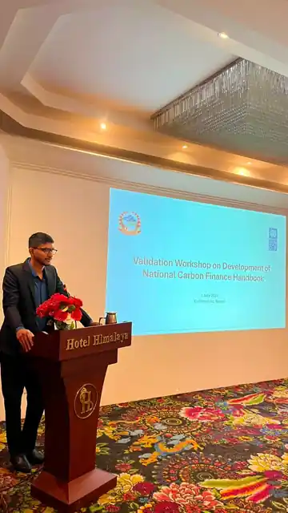
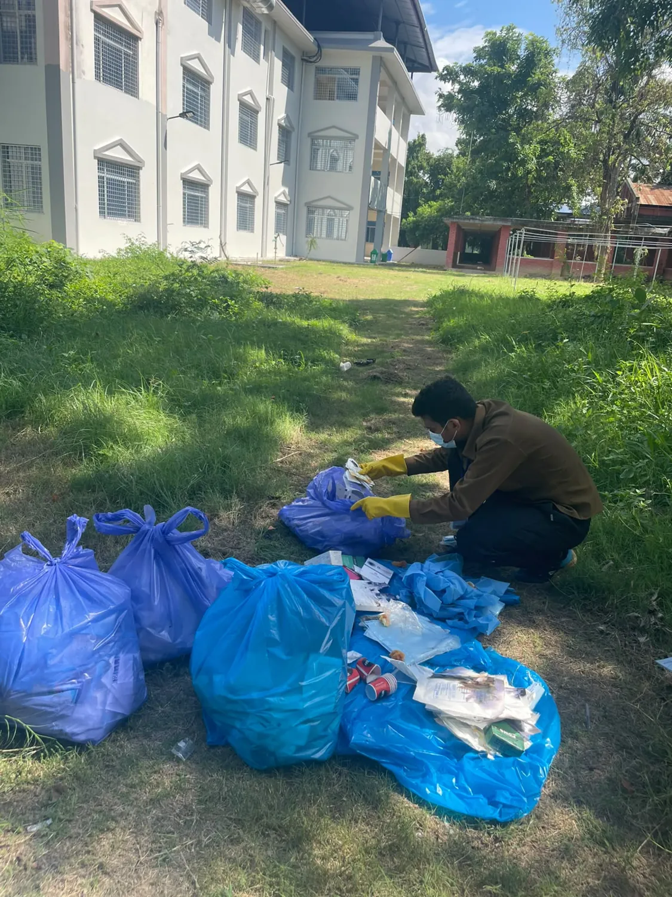
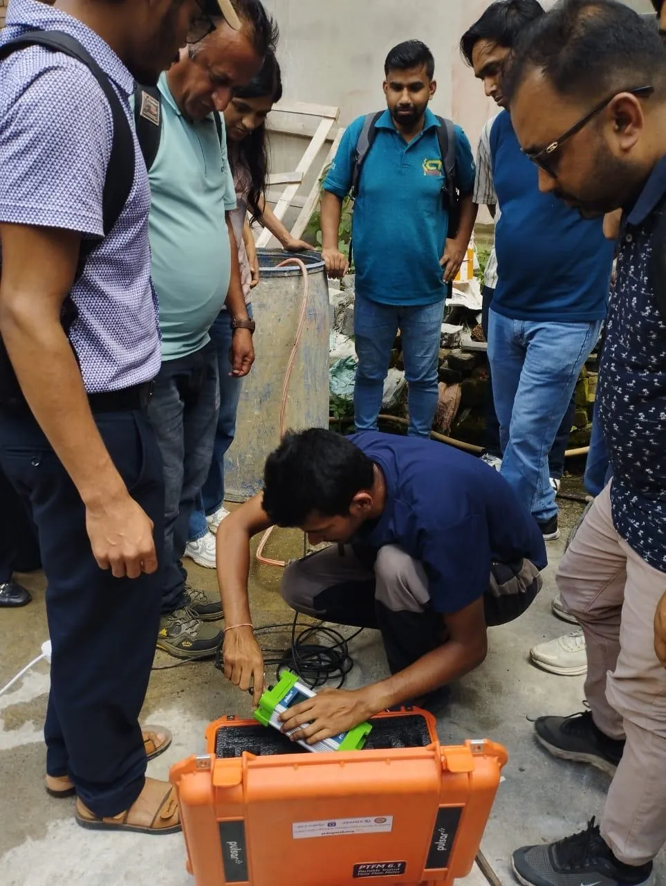
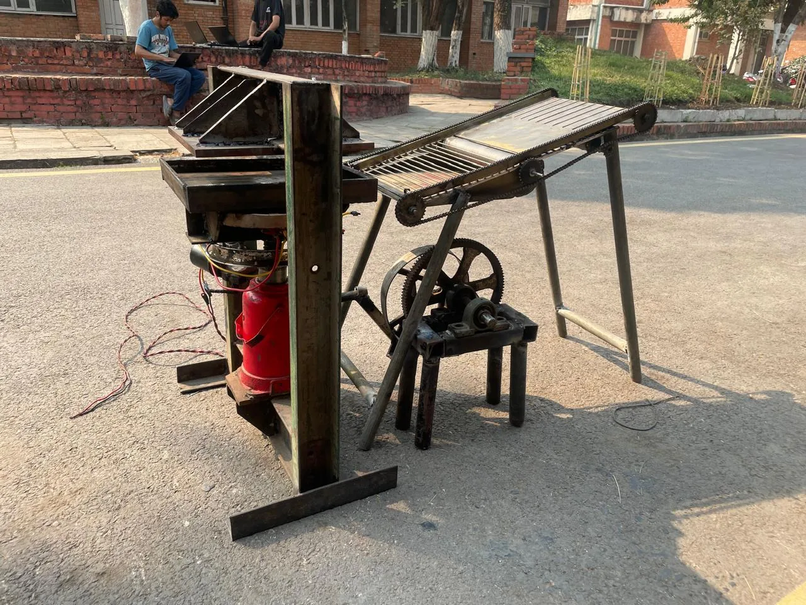
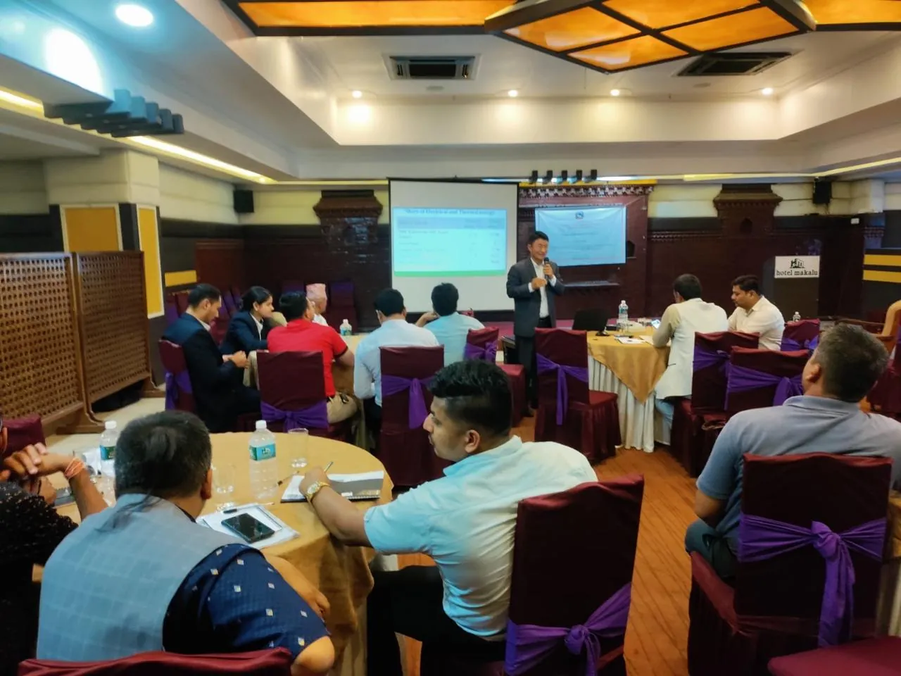
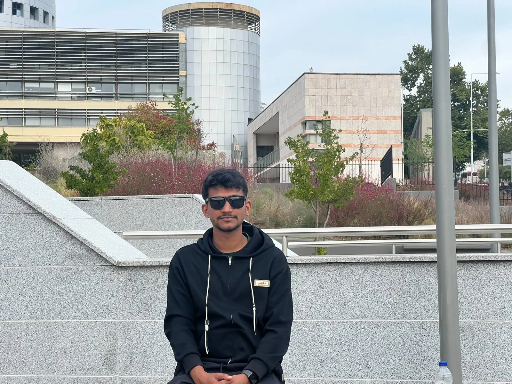

Production scheduling
My MSc thesis is a case study of production scheduling in an aluminium profile manufacturing industry.
Hello, I'm
Mechanical Engineer · MSc Renewable Energy Engineering

I am a Mechanical Engineer with a growing focus on operations research, currently pursuing an MSc in Renewable Energy Engineering at Pulchowk Campus, Institute of Engineering, Tribhuvan University.
My work spans production scheduling, optimization and mathematical modelling, alongside municipal energy planning, industrial and institutional energy audits, greenhouse-gas projection, carbon-footprint assessment, carbon-finance research and technical reporting.
I am most interested in assignments where analysis has to connect with real operating conditions, policy constraints, economics and implementation decisions.

Operations research is the thread that connects my work: describe a decision as a model, state the constraints, compare the alternatives with data, then choose.
My MSc thesis is a case study of production scheduling in an aluminium profile manufacturing industry.
Energy and GHG projections to 2030 under BAU, low, medium and high intervention scenarios, compared on demand, emissions and cost.
Energy-audit measures ranked by savings and payback, and energy-system optimization as a research interest.
Tools: Excel, Oracle Crystal Ball, FINPLAN, LEAP and Python.
Choose a dispatching rule and watch the schedule and the numbers change. The five jobs are made up for illustration and are not data from my thesis.
| Job | Processing time | Due at |
|---|---|---|
| J1 | 4 | 9 |
| J2 | 2 | 12 |
| J3 | 6 | 8 |
| J4 | 3 | 20 |
| J5 | 5 | 15 |
Working across clean-energy, energy-efficiency and climate-related consulting assignments in Nepal.

Contributed to mechanical design work for ropeway systems, including 3D modelling of gondola and chassis components and support to driving-mechanism design.
Energy, climate and engineering assignments with a clear analytical core. Select a photo to open the gallery.

Technical support to a UNDP-supported national initiative coordinated with the Ministry of Forests and Environment. Work included literature and policy review covering NDC 3.0, NAP, LTS, carbon-trade regulations, Article 6, MRV guidance and national and international carbon-finance references.

7 photosFacility-level GHG inventories covering electricity, diesel generators, vehicles, LPG, refrigerants, anesthetic gases, solid waste and wastewater, followed by assessment of practical decarbonization measures.
Field assessment of municipal energy-use patterns, demand forecasting and GHG projection to 2030 under multiple intervention scenarios.

6 photosDetailed assessment of electrical energy consumption, equipment and operating practices in a 100-bed healthcare facility, including field measurement, demand analysis, conservation measures and payback evaluation.

11 photosDesigned and fabricated a machine for bamboo-panel production, developing 3D models and technical drawings and participating in prototype assembly, testing and refinement.

4 photosContributed to WECS-supported energy-audit assignments and national reference documents for domestic appliances, industrial sectors, and commercial and residential sectors.
No projects match this filter. Select "All" to see everything.
From field reality to a defensible engineering decision. My strongest work sits between site-level evidence and structured analysis.
Site visits, equipment inventories, bills, fuel records, surveys, real-time measurements and stakeholder consultation.
Clean datasets, define baselines, identify assumptions and organize the evidence needed for modelling.
Use spreadsheets, LEAP, SPSS and operations-research methods to compare demand, emissions, costs and interventions.
Turn analysis into technical recommendations, investment logic, policy inputs and implementation priorities.
Participating in the Erasmus Programme in Thessaloniki, Greece, while continuing my MSc in Renewable Energy Engineering.

Pulchowk Campus, Institute of Engineering, Tribhuvan University
Pulchowk Campus, Institute of Engineering, Tribhuvan University

5 photosI am spending part of my MSc journey at Aristotle University of Thessaloniki in Greece through the Erasmus Programme, adding an international academic setting to my work on renewable energy, carbon markets and sustainable transport.
Tools I use to move from engineering data to clear analysis.
I am open to professional collaboration, technical assignments, research discussions and opportunities related to renewable energy, energy efficiency, carbon finance and sustainable engineering.
sapkotaganesh2058@gmail.com